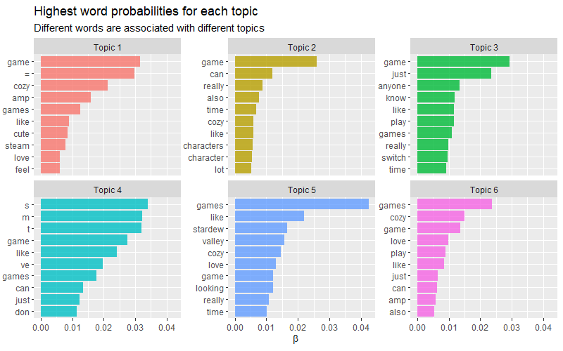
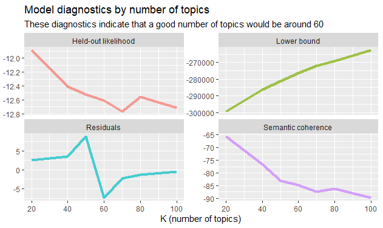
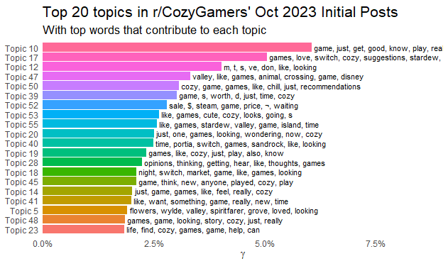
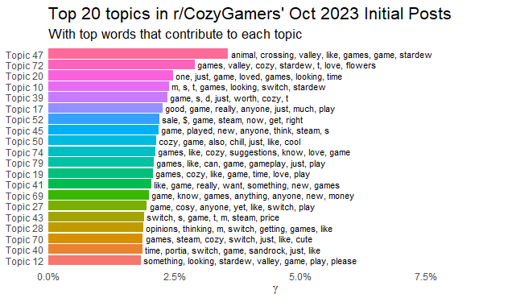

Initial Post STM
Coming into this project, I had three main questions that I sought to start addressing by doing two structured topic models (STMs):
- What conversations are typically started on r/CozyGamers?
- How often does mental health language enter into these conversations and in what ways?
- Overall Question (perhaps spanning my entire degree?) – At what point can or will video games be prescribed for the management of stress?
In the first topic model, I used the text of 995 initial posts on r/CozyGamers in October 2023. I used just the initial posts both because of time limitations and as a way to efficiently identify a baseline for “typical” conversation in the Subreddit.
The logic behind choosing r/CozyGamers for this exploration into computational rhetoric is because I am already familiar with the discourse that happens on the Subreddit–chief among it game suggestions. That is, since I’m not familiar with coding, I knew that if I could produce a topic model that found different permutations of how people recommend games, I could trust that the topic model is accurate, which would allow me to go forward into the territory I’m less familiar with (how does mental health language intersect with these conversations?).
To construct the code explored in depth below, I used and adapted code provided by Dan Card (2023), James Cook (2023), and Julia Silge (2018).
So, Time for Coding
Loading Libraries
Taking into account the need to scrape, clean, and visualize the data, I loaded all the libraries discussed and used for these purposes.
```{r}
# load quanteda family of packages
library(quanteda)
library(quanteda.dictionaries)
library(quanteda.textmodels)
library(quanteda.textplots)
library(quanteda.textstats)
# load other libraries
library(readtext)
library(janitor)
library(spacyr)
library(tidyverse)
library(dplyr)
library(tidytext)
library(stm)
library(furrr)
library(ggthemes)
library(ggplot2)
library(scales)
```Scraping
Following a tutorial by James Cook (2023) and using the “RedditExtractoR” package, I scraped recent initial posts, saved them as a CSV, then read them into the R environment.
```{r}
CGrecent <- find_thread_urls(subreddit = "CozyGamers", sort_by = "new", period = "month")
write.csv(CGrecent, "data/recent_threads.csv")
recent_threads <- read.csv("data/recent_threads.csv")
```Cleaning
Guided by code provided by Dan Card (2023) which uses “tidyverse” and “janitor”, I cleaned the data and selected only the columns of interest.
```{r}
recent_threads <- clean_names(recent_threads)
threads_clean <- recent_threads %>%
select(title,
text,
comments)
```Making a DFM
Continuing with the code demonstrated by Card (2023), I made a corpus object specifically from the text of the original posts, tokenized it, removed stopwords, and then converted that to a DFM. I also noticed during this process my unfortunate file hygiene practice of just making the title longer and longer…
```{r}
thread_corp <- corpus(threads_clean, text_field = "text")
thread_tokens <- tokens(thread_corp, remove_punct = TRUE, remove_separators = TRUE, remove_numbers = TRUE)
thread_tokens_nostop <- thread_tokens %>% tokens_remove(stopwords("en"))
thread_tokens_nostop_dfm <- dfm(thread_tokens_nostop)
```Topic Modeling!
Now for the main event. Using code by Julia Silge (2018), I generated a topic model using the DFM.
```{r}
# The actual topic model, wheeeee
topic_model <- stm(thread_tokens_nostop_dfm, K = 6, verbose = FALSE, init.type = "Spectral")
```Visualizing the Model
To begin assessing the topic model, I used the code below to visualize the results.
```{r}
td_beta <- tidy(topic_model)
td_beta %>%
group_by(topic) %>%
top_n(10, beta) %>%
ungroup() %>%
mutate(topic = paste0("Topic ", topic),
term = reorder_within(term, beta, topic)) %>%
ggplot(aes(term, beta, fill = as.factor(topic))) +
geom_col(alpha = 0.8, show.legend = FALSE) +
facet_wrap(~ topic, scales = "free_y") +
coord_flip() +
scale_x_reordered() +
labs(x = NULL, y = expression(beta),
title = "Topic Topics in r/CozyGamers Initial Posts Oct 2023",
subtitle = "Highest word probabilities for each topic")
```Which produced this word probability graph:

Now, more of the main event. Silge’s (2018) topic modeling tutorial took me through a “tuning process” for the topic model. First, it makes topic models with a range of topic numbers (sorting 995 posts into 20, 40, 50, 60, 70, 80, or 100 buckets). That done, these models are plotted against each other to measure the lower bound, residuals, semantic coherence, and held-out likelihood based on number of topics.
```{r}
many_models <- data_frame(K = c(20, 40, 50, 60, 70, 80, 100)) %>%
mutate(topic_model = future_map(K, ~stm(thread_tokens_nostop_dfm, K = .,
verbose = FALSE)))
heldout <- make.heldout(thread_tokens_nostop_dfm)
k_result <- many_models %>%
mutate(exclusivity = map(topic_model, exclusivity),
semantic_coherence = map(topic_model, semanticCoherence, thread_tokens_nostop_dfm),
eval_heldout = map(topic_model, eval.heldout, heldout$missing),
residual = map(topic_model, checkResiduals, thread_tokens_nostop_dfm),
bound = map_dbl(topic_model, function(x) max(x$convergence$bound)),
lfact = map_dbl(topic_model, function(x) lfactorial(x$settings$dim$K)),
lbound = bound + lfact,
iterations = map_dbl(topic_model, function(x) length(x$convergence$bound)))
k_result
k_result %>%
transmute(K,
`Lower bound` = lbound,
Residuals = map_dbl(residual, "dispersion"),
`Semantic coherence` = map_dbl(semantic_coherence, mean),
`Held-out likelihood` = map_dbl(eval_heldout, "expected.heldout")) %>%
gather(Metric, Value, -K) %>%
ggplot(aes(K, Value, color = Metric)) +
geom_line(linewidth = 1.5, alpha = 0.7, show.legend = FALSE) +
facet_wrap(~Metric, scales = "free_y") +
labs(x = "K (number of topics)",
y = NULL,
title = "Model diagnostics by number of topics",
subtitle = "These diagnostics indicate that a good number of topics would be around 60")
```And the resulting graph for my sample was:

As someone unused to this sort of graph, this was hard for me to wrap my head around at first (and perhaps still now?). Through working with the models, examining Silge’s results, and a bit of extra reading, I found that there should be a balance between residuals and semantic coherence without heavily biasing either one. The reason behind this is that there is an inverse relationship between them.
That is, if I prioritized semantic coherence alone and put it at its highest level, 20 topics, the resulting model will have essentially smashed so many posts into the same bucket that commonality between them is inevitable. The trade off is that because coherence has been so emphasized, the uniqueness of the topics is obscured, leading to “same-y,” general topics. The same kind of opaqueness happens in reverse when residuals are prioritized at 100 topics–either way, the topic model ends up saying very little.
Silge’s tutorial allows for each topic number (K value) to be plotted, a useful feature when I was working through the above learning experience, using the following code:
```{r}
topic_model <- k_result %>%
filter(K == 60) %>%
pull(topic_model) %>%
.[[1]]
topic_model
td_beta <- tidy(topic_model)
td_beta
td_gamma <- tidy(topic_model, matrix = "gamma",
document_names = rownames(thread_tokens_nostop_dfm))
td_gamma
top_terms <- td_beta %>%
arrange(beta) %>%
group_by(topic) %>%
top_n(7, beta) %>%
arrange(-beta) %>%
select(topic, term) %>%
summarise(terms = list(term)) %>%
mutate(terms = map(terms, paste, collapse = ", ")) %>%
unnest(cols = c(terms))
gamma_terms <- td_gamma %>%
group_by(topic) %>%
summarise(gamma = mean(gamma)) %>%
arrange(desc(gamma)) %>%
left_join(top_terms, by = "topic") %>%
mutate(topic = paste0("Topic ", topic),
topic = reorder(topic, gamma))
gamma_terms %>%
top_n(20, gamma) %>%
ggplot(aes(topic, gamma, label = terms, fill = topic)) +
geom_col(show.legend = FALSE) +
geom_text(hjust = 0, nudge_y = 0.0005, size = 3,
family = "IBMPlexSans") +
coord_flip() +
scale_y_continuous(expand = c(0,0),
limits = c(0, 0.09),
labels = label_percent()) +
theme_tufte(base_family = "IBMPlexSans", ticks = FALSE) +
theme(plot.title = element_text(size = 16,
family="IBMPlexSans-Bold"),
plot.subtitle = element_text(size = 13)) +
labs(x = NULL, y = expression(gamma),
title = "Top 20 topics in r/CozyGamers' Oct 2023 Initial Posts",
subtitle = "With top words that contribute to each topic")
```As part of my exploration, I plotted every K value allowed, but for brevity’s sake, I’ll include three examples below: K = 40, 60, and 80:
K = 40

40 Topics produced a pretty readable set of word chunks that I could extrapolate from, but notice that most of them are dominated by general words common to the Subreddit like game, games, play, like, and just. The model needs to be a bit sharper for me to really understand what’s happening.
K = 60

Enter 60 Topics. The general language from the 40 model is still present, but it’s not as dominant as before, and more interesting, specific words are popping up, like wondering, chill, price, and cute. Additionally, game titles and platform names are more prevalent here, which is giving a more accurate look at how communication actually works on the Subreddit.
K = 80

And now we’ve gone too far the other direction. Notice how the topic proportions flatten out sooner and more dramatically than the other two K values? That tells me that these topics likely contain a similar number of posts in their topic bucket. So, instead of finding more interesting trends overall like K = 60, this one is playing a round of match three (or two or four).
Digging a Bit Deeper
At this point, I was pretty sure that K = 60 was going to be the sweet spot, but I wanted to peek under the hood a bit more. So, using code from our class on topic modeling, I applied:
```{r}
labelTopics(topic_model, n = 10)
```This gave me a more expanded (exploded?) view of the top words in each topic for K = 60. Below are the results for the top two topics.
Topic 10 Top Words:
Highest Prob: game, just, get, good, know, play, really, can, want, anyone
FREX: good, get, know, recommend, just, game, anyone, sims, want, buy
Lift: tied, recommend, highly, wii, good, buy, horrible, anyone, artstyle, decide
Score: anyone, recommend, good, get, farm, sims, buy, fae, just, want
Topic 17 Top Words:
Highest Prob: games, love, switch, cozy, suggestions, stardew, animal, crossing, like, new
FREX: suggestions, animal, crossing, switch, love, games, stardew, thank, new, deck
Lift: challenged, decks, granddaughter, halloweenish, https://reddit.com/link/17gfqu5/video/p8dt3ek34fwb1/player, https://www.youtube.com/watch?v=qcikxoen-ig, prefers, technologically, suggestions, slower
Score: suggestions, crossing, animal, switch, stardew, love, thank, deck, new, everyone Yep. That seems about right, actually.
But I’ve essentially made a topic model to find what I already kind of knew was there. This makes sense when I specify that this is a first step, a testing procedure that will then allow me to look for what I’m really interested in: mental health language in this space. So–I did another topic model.
References
Card, D. (2023). week02 [Github repository]. Github. https://github.com/danieljcard1/demo_docs/tree/main/demos/week02
Card, D. (2023). week07 [Github repository]. Github. https://github.com/danieljcard1/demo_docs/tree/main/demos/week07
Cook, J. (2023). Extracting reddit data with R and the package RedditExtractoR (2023 update) [Video]. YouTube, https://www.youtube.com/watch?v=Snm0Azfi_hc
Silge, J. (2018). Training, evaluating, and interpreting topic models. Julia Silge. https://juliasilge.com/blog/evaluating-stm/